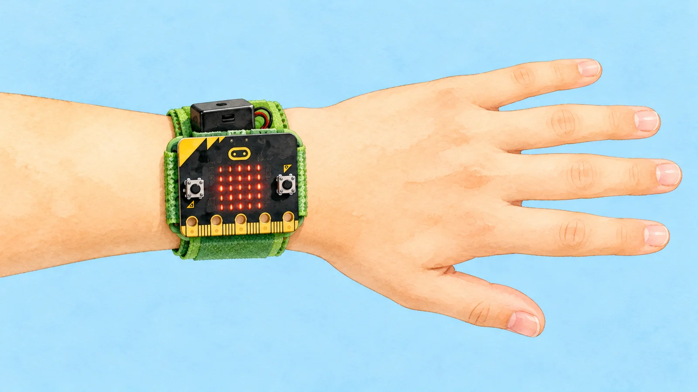
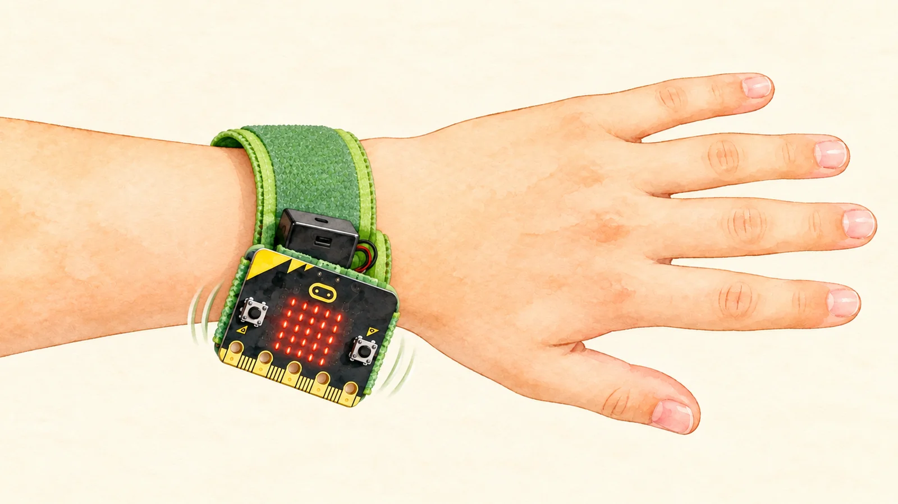
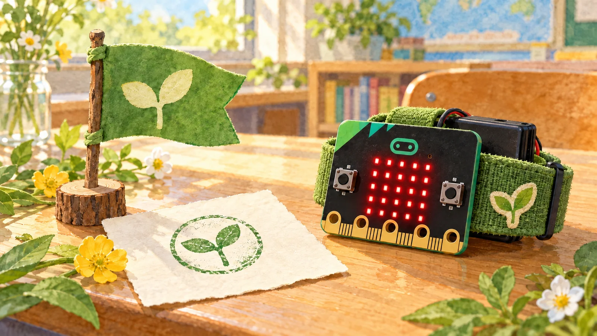

체험 활동 · 시험 방법은 그대로 둬요
근거를 읽고 원인 카드를 하나 골라 다시 시험해요. 미션은 셋이에요.
사용 조건 카드 ·

| 손바닥 비비기 | 손등 문지르기 | 손가락 문지르기 |
|---|
세 동작을 두 번씩 해 본 기록이에요. 기본 조건은 오른손 손목, 보통 빠르기예요. ✕ 아래 글자는 코치가 안내한 동작이에요.
근거를 보고 원인 카드를 하나 짚어요
고칠 일 카드를 한 장 골라 시험해요. 장마다 한 번씩이에요.
표를 보고 ✕를 없앤 일을 골라요.


세 미션을 모두 했어요. 한 곳만 고쳐 다시 시험하면 원인이 가려져요.
연습용 기록이에요 · 마이크로비트 코치로 다시 시험해요
그림 일부는 생성형 AI로 만들었어요.